🏯
Sử Việt Tương Tác
AN DƯƠNG VƯƠNG
Thành Cổ Loa & Nỏ Thần
Thành Cổ Loa & Nỏ Thần
257 TCN — 179 TCN · Nước Âu Lạc
Ngươi là Thục Phán — thủ lĩnh Âu Việt đứng trước cơ hội thống nhất giang sơn. Từ liên minh dựng nước, xây thành Cổ Loa hình trôn ốc, chế nỏ thần bách phát bách trúng, đến bi kịch Mỵ Châu — Trọng Thủy: một hành trình 9 chương về dựng nước, giữ nước và cái giá của sự mất cảnh giác.
🏹 9 chương
🎓 Kiến thức + Suy ngẫm
📖 Có nguồn tham khảo
▾ hoặc cuộn xuống
⚔️ Chương I · Trước 257 TCN — Thục Phán Đánh Hùng Vương 📖 nguồn
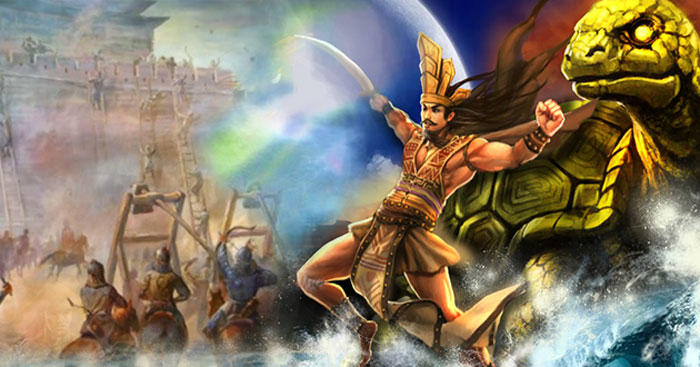
📚 Bối cảnh
Cuối đời Hùng Vương thứ 18, quốc lực Văn Lang suy yếu. Thục Phán — thủ lĩnh bộ tộc Âu Việt ở vùng núi phía Bắc — nhiều lần đem quân đánh Văn Lang, mang theo mối oán truyền đời của tổ tiên với dòng dõi Hùng Vương.
Ngươi — Thục Phán, thủ lĩnh Âu Việt — đứng trước cơ hội lớn nhất đời mình. Quân Văn Lang đang lục đục nội bộ, nhưng lực lượng Âu Việt của ngươi một mình không đủ áp đảo. Xung quanh còn có bộ tộc Lạc Việt hùng mạnh — họ có thể là đồng minh, hoặc kẻ cản đường.
Quân sư của Thục Phán
"Thưa chủ tướng, một mình Âu Việt ta khó lòng thắng được Văn Lang. Nếu liên kết được với các bộ lạc Lạc Việt, sức mạnh sẽ tăng gấp bội — nhưng liên minh đồng nghĩa phải chia sẻ quyền lực sau này."
🎓 Kiểm tra kiến thức
Hùng Vương thứ 18 là vị vua cuối cùng của triều đại nào?
💭 Suy ngẫm (không chấm điểm)
Khi đứng trước một mục tiêu lớn hơn sức mình, bạn sẵn sàng chia sẻ quyền lực để liên kết, hay muốn giữ trọn vinh quang một mình dù rủi ro thất bại cao hơn?
Không có đáp án đúng/sai, đây là câu hỏi để bạn tự suy ngẫm.
⚡ Bạn quyết định chiến lược nào?
📚 Nguồn Tham Khảo
Sự kiện Thục Phán đánh Hùng Vương, chấm dứt triều đại Văn Lang, được ghi lại trong chính sử.
Tài liệu chính thống
Đại Việt Sử Ký Toàn Thư — Ngô Sĩ Liên (Kỷ Thục)
Ghi chú về phương pháp thể hiện
Sự kiện, mốc thời gian: dựa trên chính sử đã kiểm chứng
Lời thoại quân sư: dựng lại minh họa theo tinh thần sử liệu, không phải nguyên văn ghi chép
⭐ Lựa chọn A · Liên Minh Âu Việt – Lạc Việt
Sáng suốt! Sự liên kết hai bộ tộc tạo nên sức mạnh áp đảo. Quân Văn Lang tan rã, Hùng Vương thứ 18 thất thế. Đây chính là nền móng cho một nhà nước mới, hợp nhất hai dòng máu Âu Việt và Lạc Việt.
💡 Vì sao điều này quan trọngChính cái tên "Âu Lạc" mà Thục Phán đặt cho nước mới sau này chính là ghép từ "Âu Việt" và "Lạc Việt" — minh chứng sống động cho cuộc liên minh này.
⚡ Tiếp tục hành trình...
📍 Lựa chọn B · Đơn Độc Tấn Công
Một mình Âu Việt tấn công là quá mạo hiểm. Thục Phán buộc phải tìm đến các bộ lạc Lạc Việt để hợp sức — vì sức một tộc không đủ để làm nên đại nghiệp.
Không có sự hậu thuẫn của các bộ lạc Lạc Việt đông đảo hơn, quân Âu Việt khó lòng áp đảo được Văn Lang — cuộc chinh phạt có nguy cơ kéo dài, tiêu hao lực lượng, hoặc thất bại hoàn toàn trước khi kịp thống nhất giang sơn.
⚡ Tìm đến liên minh...
📍 Lựa chọn C · Thương Lượng Hòa Bình
Triều đình Văn Lang suy yếu nhưng vẫn còn thể diện — khó lòng nhường ngôi qua thương lượng đơn thuần. Thục Phán nhận ra cần có sức mạnh liên minh thực sự đứng sau mọi cuộc đàm phán.
⚡ Xây dựng sức mạnh liên minh...
👑 Chương II · 257 TCN — Lập Nước Âu Lạc 📖 nguồn
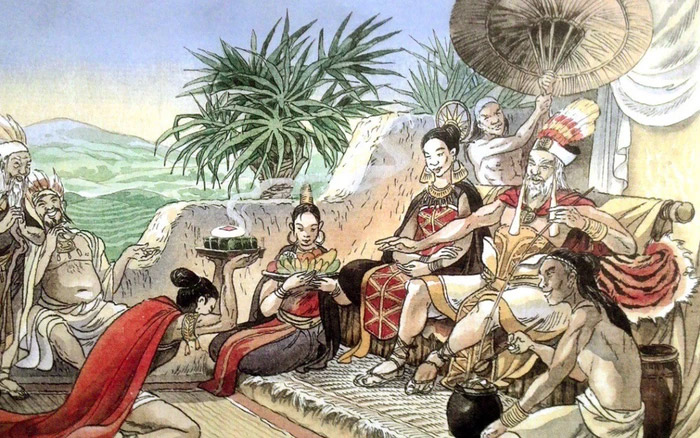
📚 Bối cảnh
Sau chiến thắng, Thục Phán hợp nhất Âu Việt và Lạc Việt thành một nhà nước mới, đặt quốc hiệu Âu Lạc, tự xưng An Dương Vương, đóng đô ở vùng Phong Khê.
Ngôi báu đã yên, nhưng đây mới là thử thách đầu tiên của một vị vua: con cháu, quý tộc cũ của nhà Hùng Vương vẫn còn đó. Dân Lạc Việt bao đời thờ cúng các đời vua Hùng như tổ tiên. Cách ngươi đối xử với họ sẽ quyết định liệu Âu Lạc có thực sự đoàn kết hay chỉ là một liên minh gượng ép.
Một cận thần
"Tâu bệ hạ, dòng dõi cũ của Hùng Vương vẫn còn nhiều người ở lại. Xin bệ hạ định đoạt: nên trừng phạt để trừ hậu họa, hay khoan hòa để giữ yên lòng dân?"
🎓 Kiểm tra kiến thức
Tên gọi "Âu Lạc" mang ý nghĩa gì?
💭 Suy ngẫm (không chấm điểm)
Một nhà lãnh đạo mới lên nắm quyền nên đối xử thế nào với những người từng ở phe đối lập, để vừa giữ được uy quyền, vừa giữ được lòng dân?
Không có đáp án đúng/sai.
⚡ Bạn định đoạt ra sao?
📚 Nguồn Tham Khảo
Việc lập quốc hiệu Âu Lạc và chính sách với dòng dõi Hùng Vương được ghi trong chính sử.
Tài liệu chính thống
Đại Việt Sử Ký Toàn Thư — Ngô Sĩ Liên (Kỷ Thục)
Ghi chú về phương pháp thể hiện
Quốc hiệu, sự kiện lên ngôi: dựa trên chính sử
Lời thoại cận thần: dựng lại minh họa, không phải nguyên văn ghi chép
⭐ Lựa chọn A · Đoàn Kết Dân Tộc
Quyết định anh minh! An Dương Vương giữ nguyên tín ngưỡng thờ cúng vua Hùng, coi đó là cội nguồn chung của cả dân tộc, không phải điều cần xóa bỏ. Lòng dân yên, triều đình vững.
💡 Di sản còn lạiTín ngưỡng thờ cúng Hùng Vương vẫn được người Việt gìn giữ qua hàng nghìn năm, trở thành Di sản văn hóa phi vật thể đại diện của nhân loại (UNESCO công nhận năm 2012).
⚡ Tiếp tục hành trình...
📍 Lựa chọn B · Trừng Phạt Nghiêm Khắc
Trừng phạt gắt gao có thể trừ hậu họa trước mắt, nhưng sẽ gieo mầm oán hận trong lòng dân Lạc Việt — những người vẫn tôn kính các đời vua Hùng như tổ tiên của mình.
Một cuộc thanh trừng gắt gao có thể khiến dân Lạc Việt cảm thấy bị cai trị bởi kẻ ngoại tộc, làm rạn nứt sự đoàn kết vừa hình thành. Về lâu dài, một Âu Lạc chia rẽ nội bộ sẽ khó đứng vững trước áp lực từ phương Bắc.
⚡ Chọn con đường đoàn kết...
📍 Lựa chọn C · Trục Xuất Nửa Vời
Trục xuất khỏi triều chính mà không thật lòng hòa giải chỉ tạo ra một tầng lớp bất mãn âm thầm — nguy hiểm không kém gì trừng phạt công khai.
⚡ Chọn con đường đoàn kết thật sự...
🏯 Chương III · ~250 TCN — Xây Thành Cổ Loa 📖 nguồn
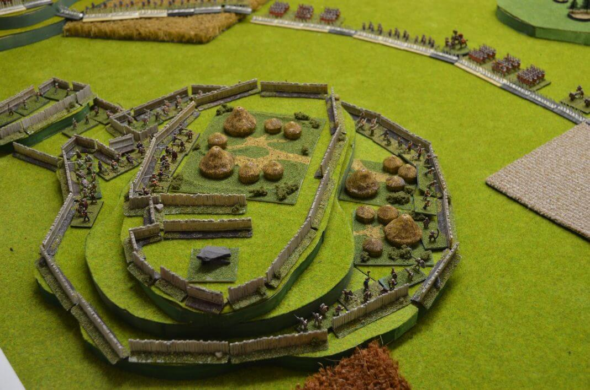
Nỏ Thần
0%
📚 Bối cảnh
Ngôi vua đã yên, nhưng đất nước cần một tòa thành kiên cố để phòng thủ trước kẻ thù phương Bắc đang trỗi dậy.
Các quan văn, tướng võ tề tựu trước sân điện. Thầy địa lý tâu:
Thầy địa lý — dâng tấu
"Tâu bệ hạ, vùng đất Phong Khê có thế núi sông hùng vĩ, địa thế hiểm yếu, lại được thần Kim Quy phù hộ. Xin bệ hạ hạ lệnh xây thành ở đây!"
🎓 Kiểm tra kiến thức
An Dương Vương xây thành Cổ Loa ở đâu, ngày nay thuộc tỉnh/thành phố nào?
💭 Suy ngẫm (không chấm điểm)
Nếu là người đứng đầu một đất nước vừa mới thành lập, bạn sẽ ưu tiên xây thành trì hay xây dựng lòng dân trước?
Không có đáp án đúng/sai.
⚡ Bạn quyết định xây thành như thế nào?
📚 Nguồn Tham Khảo
Việc xây thành Cổ Loa và sự tích thần Kim Quy thuộc thể loại truyền thuyết, pha trộn giữa di tích khảo cổ có thật và yếu tố huyền thoại.
Tài liệu chính thống
Lĩnh Nam Chích Quái — Trần Thế Pháp (truyện "Rùa Vàng")
Ghi chú về phương pháp thể hiện
Địa danh, quy mô thành: đối chiếu với khảo cổ học đã kiểm chứng
Chi tiết thần Kim Quy giúp xây thành: yếu tố truyền thuyết, không phải sự kiện lịch sử xác thực
⭐ Lựa chọn A · Thành Cổ Loa Ra Đời!
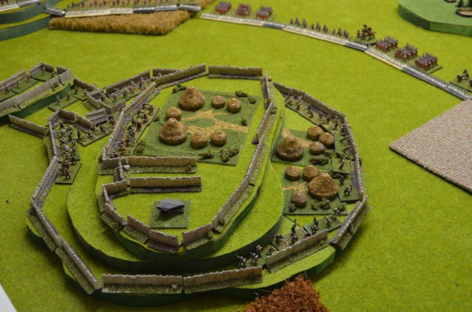
Xuất sắc! Thần Kim Quy hiện ra giúp vua xây thành theo hình trôn ốc với 9 vòng lũy, chu vi hơn 8 km. Giặc ngoại xâm phá đi, Kim Quy giúp xây lại — sau nhiều lần như vậy thành mới hoàn thành.
📖 Thành Cổ Loa — Kỳ công kiến trúc
Thành Cổ Loa là kinh đô đầu tiên của nhà nước phong kiến Việt Nam. Thành có 3 vòng hào và tường đất, bố trí xoáy trôn ốc — cực kỳ khó công phá.
🌀 9 vòng lũy📏 Chu vi >8 km💧 3 vòng hào nước
⚡ Tiếp tục hành trình...
📍 Lựa chọn B · Thành Trên Núi
Không tối ưu! An Dương Vương chọn đất bằng phẳng vùng Phong Khê — nơi hội tụ sức dân, tiện vận chuyển. Thần Kim Quy chỉ vua xây thành hình trôn ốc ở đây.
Xây trên núi cao giúp phòng thủ tốt hơn trước tấn công trực diện, nhưng sẽ rất khó vận chuyển lương thực, khó tập trung dân cư và thợ thủ công để phát triển kinh đô. Về lâu dài, một triều đình bị cô lập trên núi khó lòng duy trì sức mạnh kinh tế — quân sự đủ để chống lại một thế lực lớn như Triệu Đà.
⚡ Nghe lời thần Kim Quy...
📍 Lựa chọn C · Du Kích
An Dương Vương hiểu rằng muốn giữ dân, giữ nước thì cần có thành trì. Du kích không bảo vệ được dân lành, không giữ được kho tàng.
Không có thành trì kiên cố, Âu Lạc sẽ thiếu một trung tâm chính trị — quân sự ổn định để tập hợp lực lượng, tích trữ vũ khí và lương thực. Một nhà nước non trẻ khó có thể đối đầu lâu dài với một đế chế lớn mạnh đang trỗi dậy ở phương Bắc.
⚡ Xây thành vững chắc...
🏹 Chương IV · ~230 TCN — Chế Tạo Nỏ Thần 📖 nguồn
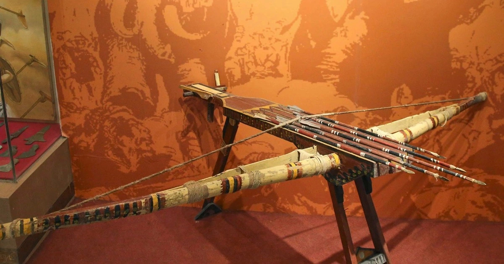
🐢 Món quà thần kỳ
Trước khi rời đi, thần Kim Quy tặng An Dương Vương một chiếc móng vuốt, dặn dùng làm lẫy nỏ. Vua sai tướng Cao Lỗ chế tạo ra Nỏ Liên Châu — bắn một lần được hàng trăm mũi tên.
Nỏ thần hoàn thành, thử nghiệm thành công vang dội. Nhưng một vũ khí lợi hại đến đâu cũng chỉ mạnh khi bí mật của nó được giữ kín. Quan Thái sư tâu hỏi vua về việc quản lý bí mật quân sự tối quan trọng này.
Quan Thái sư
"Tâu bệ hạ, cách chế tạo lẫy nỏ thần là bí mật sống còn của Âu Lạc. Nên cho ai được biết? Càng nhiều người biết, càng khó giữ kín; càng ít người biết, càng khó truyền lại nếu có biến cố."
🎓 Kiểm tra kiến thức
Ai là người chế tạo ra nỏ thần cho An Dương Vương?
💭 Suy ngẫm (không chấm điểm)
Giữa một bí mật chỉ vài người biết (dễ giữ kín nhưng rủi ro nếu người đó phản bội) và một bí mật nhiều người biết (khó rò rỉ vì phân tán nhưng khó kiểm soát) — bạn nghiêng về cách nào?
Không có đáp án đúng/sai — hãy tự hỏi bản thân trước khi chọn.
⚡ Bạn quyết định quản lý bí mật nỏ thần ra sao?
📚 Nguồn Tham Khảo
Nỏ thần Liên Châu và tướng Cao Lỗ được ghi trong truyền thuyết dân gian, phản ánh niềm tự hào về kỹ thuật quân sự của người Việt cổ.
Tài liệu chính thống
Lĩnh Nam Chích Quái — Trần Thế Pháp
Ghi chú về phương pháp thể hiện
Tướng Cao Lỗ, nỏ Liên Châu: nhân vật và vũ khí có gốc sử liệu
Chi tiết móng vuốt thần Kim Quy: yếu tố huyền thoại, mang tính biểu tượng
⭐ Lựa chọn A · Bí Mật Tối Thượng
Thận trọng đúng mực! Chỉ vua và Cao Lỗ nắm giữ bí quyết chế tạo — nguyên tắc "càng ít người biết càng an toàn" trong quản lý vũ khí chiến lược.
💡 Nhưng...Dù cách chế tạo được giữ kín, chiếc lẫy nỏ đã hoàn thành thì lại nằm ngay trong tay vua — và đó chính là điểm yếu chí mạng sẽ bị khai thác sau này, không phải bằng vũ lực mà bằng lòng tin.
⚡ Tiếp tục hành trình...
📍 Lựa chọn B · Chia Sẻ Rộng Rãi
Càng nhiều người biết bí mật, nguy cơ rò rỉ càng cao. An Dương Vương chọn thu hẹp phạm vi biết bí mật, chỉ giữ lại trong tay những người tin cẩn nhất.
Việc phổ biến bí quyết quân sự tối quan trọng cho nhiều người làm tăng đáng kể nguy cơ rò rỉ — chỉ cần một trong số họ bị mua chuộc, đe dọa, hoặc vô tình để lộ, toàn bộ ưu thế quân sự sẽ sụp đổ nhanh hơn.
⚡ Thu hẹp phạm vi bí mật...
📍 Lựa chọn C · Cất Giữ Vật Chứng
Khắc bí quyết vào đá vẫn để lại một vật chứng hữu hình — nếu bị đánh cắp hay sao chép, bí mật coi như mất trắng. Giữ bí mật trong đầu người tin cẩn vẫn an toàn hơn giữ trên vật thể.
⚡ Giữ bí mật trong lòng người tin cẩn...
💌 Chương V · ~215 TCN — Lời Cầu Hôn Triệu Đà 📖 nguồn
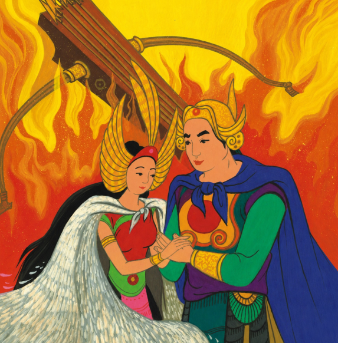
🌏 Nguy cơ phương Bắc
Nhà Tần sụp đổ, Triệu Đà — cựu quan nhà Tần — cát cứ vùng Lĩnh Nam, lập ra nước Nam Việt. Ông nhiều lần đem quân xâm lược Âu Lạc nhưng đều bị nỏ thần đánh bại, phải rút lui.
Quân Triệu Đà nhiều lần kéo sang đều thảm bại trước sức mạnh nỏ Liên Châu. Không thắng được bằng vũ lực, Triệu Đà đổi chiến thuật — gửi thư cầu hòa.
Triệu Đà — gửi thư xin hòa
"Nước ta và nước nhà vua vốn không thù oán. Xin hòa thân để hai nước cùng yên. Ta muốn kết thông gia — con trai ta là Trọng Thủy xin cưới công chúa Mỵ Châu..."
🎓 Kiểm tra kiến thức
Triệu Đà lập ra nước nào ở vùng Lĩnh Nam sau khi nhà Tần sụp đổ?
💭 Suy ngẫm (không chấm điểm)
Khi kẻ thù từng nhiều lần thua trận bỗng nhiên ngỏ lời cầu hòa và xin kết thông gia — đó là thiện chí thật lòng, hay là một nước cờ khác?
Không có đáp án đúng/sai — hãy tự hỏi bản thân trước khi chọn.
⚡ Trước lời cầu hôn của Triệu Đà, bạn quyết định...
📚 Nguồn Tham Khảo
Cuộc hôn nhân chính trị giữa Mỵ Châu và Trọng Thủy được ghi lại ở cả chính sử lẫn truyền thuyết dân gian.
Tài liệu chính thống
Đại Việt Sử Ký Toàn Thư — Ngô Sĩ Liên
Lĩnh Nam Chích Quái — Trần Thế Pháp
Ghi chú về phương pháp thể hiện
Việc Triệu Đà cầu hòa, gả Trọng Thủy: có ghi chép trong chính sử
Lời thư cầu hòa: dựng lại minh họa theo tinh thần sử liệu
⭐ Lựa chọn B · Cảnh Giác
Quyết định sáng suốt! Nếu từ chối, Triệu Đà không thể cài gián điệp. Nỏ thần Kim Quy giữ nguyên sức mạnh. Lịch sử có thể đã khác!
💡 Bài học lịch sửAn Dương Vương quá tự tin vào sức mạnh của nỏ thần mà quên rằng bí mật vũ khí là điều quý giá nhất. Đây là bài học muôn đời về an ninh quốc gia.
⚡ Tiếp tục...
📍 Lựa chọn C · Nửa Tin Nửa Ngờ
Dù cảnh giác, khi Mỵ Châu đã yêu thương Trọng Thủy, bí mật nỏ thần khó lòng giữ mãi. Không phải kẻ thù dùng sức mạnh, mà dùng tình yêu để phá hoại.
⚡ Thảm kịch vẫn diễn ra...
💞 Chương VI · ~210 TCN — Mỵ Châu, Trọng Thủy Nên Duyên 🔵 dựng lại
💍 Cuộc hôn nhân chính trị
Trọng Thủy — con trai Triệu Đà — sang ở rể tại Âu Lạc theo tục lệ xưa. Ngày qua ngày, tình cảm giữa chàng và công chúa Mỵ Châu dần nảy nở, không còn chỉ là một cuộc hôn nhân sắp đặt.
Mỵ Châu tin tưởng chồng tuyệt đối. Trong những buổi chuyện trò thân mật, nàng vô tình kể cho Trọng Thủy nghe về sức mạnh của nỏ thần — không phải vì phản bội, mà vì với nàng, chồng và cha đều là những người nàng yêu thương và tin cậy nhất trên đời.
Trọng Thủy — hỏi Mỵ Châu
"Nàng ơi, ta nghe nói phụ vương nàng có bảo vật giữ nước, khiến quân ta bao lần thua trận. Nàng có biết bí mật ấy nằm ở đâu không?"
🎓 Kiểm tra kiến thức
Trọng Thủy là con trai của ai, đến từ đâu?
💭 Suy ngẫm (không chấm điểm)
Mỵ Châu tin chồng vì tình yêu chân thật, không phải vì ngây thơ hay dại dột. Vậy tình yêu và trách nhiệm bảo vệ bí mật quốc gia — hai điều đó có nhất thiết phải mâu thuẫn với nhau không?
Không có đáp án đúng/sai.
⚡ Tiếp tục hành trình...
📚 Nguồn Tham Khảo
Diễn biến tình cảm chi tiết giữa Mỵ Châu và Trọng Thủy trong thời gian ở rể là phần dựng lại minh họa, không có ghi chép chi tiết trong chính sử.
Tài liệu tham khảo tinh thần
Lĩnh Nam Chích Quái — Trần Thế Pháp (truyện "Rùa Vàng")
Ghi chú về phương pháp thể hiện
🔵 Toàn bộ diễn biến tình cảm trong chương này là dựng lại minh họa, không phải nguyên văn ghi chép cổ sử
🗡️ Chương VII · ~208 TCN — Bí Mật Bị Đánh Tráo 📖 nguồn
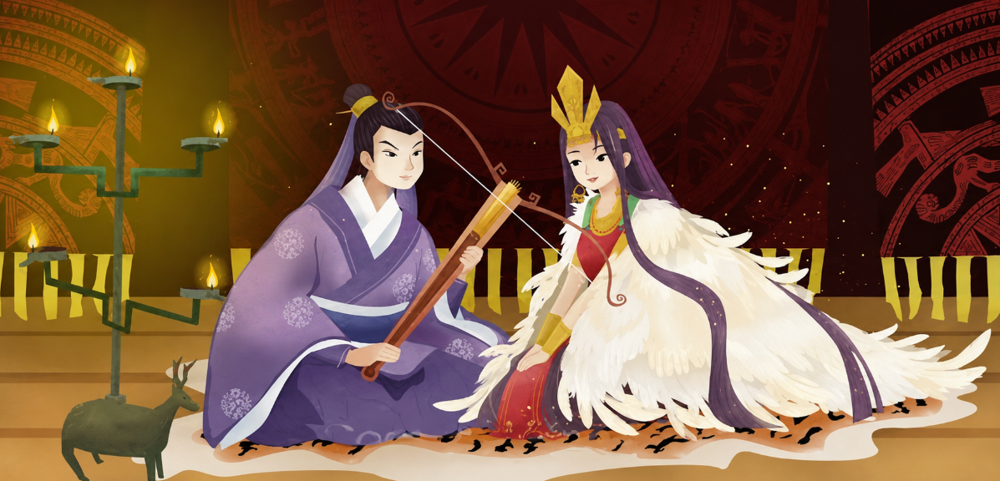
🗡️ Âm mưu
Biết được bí mật, Trọng Thủy lén tráo chiếc lẫy nỏ thần bằng một chiếc lẫy giả giống hệt. Rồi chàng xin phép về thăm cha ở Nam Việt, hẹn ngày trở lại.
Trước lúc chia tay, Trọng Thủy nắm tay Mỵ Châu, ánh mắt đầy tâm sự khó hiểu.
Trọng Thủy — trước lúc lên đường
"Nếu chẳng may loạn lạc xảy ra, ta phải tìm nàng ở đâu? Nàng hãy rắc lông ngỗng từ áo dọc theo đường mình đi, ta sẽ theo dấu đó mà tìm."
🎓 Kiểm tra kiến thức
Trước khi rời Âu Lạc, Trọng Thủy dặn Mỵ Châu làm gì để có thể tìm được nàng nếu ly loạn?
💭 Suy ngẫm (không chấm điểm)
An Dương Vương là một vị vua cảnh giác với kẻ thù bên ngoài, nhưng dường như không hề nghi ngờ điều gì bất thường từ chính con rể mình. Sự tin tưởng trong gia đình có nên là một "vùng an toàn" tuyệt đối không cần kiểm tra?
Không có đáp án đúng/sai — hãy tự hỏi bản thân trước khi chọn.
⚡ An Dương Vương có nhận ra dấu hiệu bất thường không?
📚 Nguồn Tham Khảo
Việc Trọng Thủy đánh tráo lẫy nỏ và dặn Mỵ Châu rắc lông ngỗng là tình tiết trung tâm của truyền thuyết.
Tài liệu chính thống
Lĩnh Nam Chích Quái — Trần Thế Pháp
Ghi chú về phương pháp thể hiện
Hành động đánh tráo lẫy nỏ, chi tiết lông ngỗng: có trong truyền thuyết gốc
Lời thoại chia tay giữa hai nhân vật: dựng lại minh họa
⭐ Lựa chọn A · Tin Tưởng Tuyệt Đối
Đây chính là sai lầm của An Dương Vương. Sự tin tưởng tuyệt đối vào con rể khiến vua không mảy may kiểm tra lại lẫy nỏ. Trọng Thủy mang bí mật quân sự tối quan trọng trở về Nam Việt an toàn.
Nếu có một khâu kiểm tra định kỳ đối với bảo vật quốc gia, việc đánh tráo lẫy nỏ rất có thể đã bị phát hiện trước khi Trọng Thủy kịp mang bí mật ra khỏi Âu Lạc — thay đổi hoàn toàn cục diện lịch sử sau này.
⚡ Nhận ra âm mưu quá muộn...
📍 Lựa chọn B · Nghi Ngờ Nhưng Bỏ Qua
Một chút nghi ngờ thoáng qua không đủ để ngăn chặn bi kịch. Không có hành động cụ thể nào được thực hiện, âm mưu vẫn thành công trót lọt.
⚡ Bi kịch vẫn không thể tránh khỏi...
💭 Lựa chọn C · Giả Định Thay Đổi Lịch Sử
Đây không phải điều đã xảy ra trong lịch sử — nhưng là một giả định thú vị để suy ngẫm về việc phòng bị luôn cần thiết, kể cả với người thân cận nhất.
💡 Về mặt lịch sửTrên thực tế, không có ghi chép nào cho thấy An Dương Vương đã kiểm tra lại nỏ thần trước khi Trọng Thủy rời cung. Sự việc diễn ra đúng như một bi kịch không thể cứu vãn.
⚡ Quay lại dòng chảy lịch sử...
💔 Chương VIII · 179 TCN — Bi Kịch Mỵ Châu 📖 nguồn
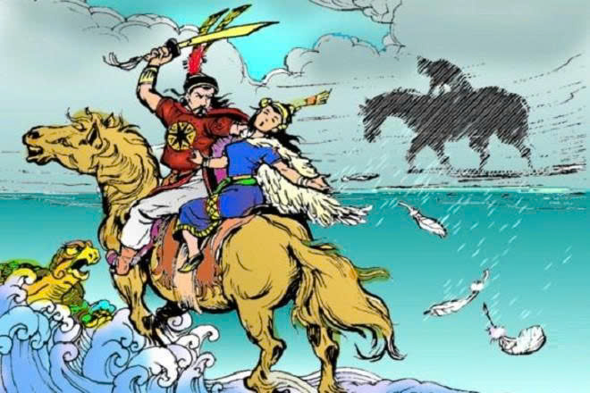
BI KỊCH MỴ CHÂU
Lông ngỗng rắc theo đường — tình yêu hay phản bội?
🏹 Bi kịch
Trọng Thủy trở về Nam Việt, dâng lẫy nỏ thật cho cha. Nắm chắc bí mật, Triệu Đà lập tức đem quân tấn công Âu Lạc lần nữa.
Quân Triệu Đà tràn qua biên giới như thác lũ. Ngươi giơ nỏ thần lên bắn — nhưng mũi tên không còn thiêng nữa! Thành Cổ Loa thất thủ. Ngươi ôm Mỵ Châu chạy về phương Nam trên lưng ngựa. Mỵ Châu — không biết đã bị lừa — vẫn rắc lông ngỗng theo đường chạy như lời dặn của chồng.
Thần Kim Quy
"Kẻ thù đang ngồi sau lưng nhà ngươi đó!"
🎓 Kiểm tra kiến thức
Mỵ Châu làm gì dọc đường chạy trốn khiến kẻ thù truy kịp?
💭 Suy ngẫm (không chấm điểm)
Mỵ Châu không cố ý phản bội đất nước — nàng chỉ tin vào tình yêu. Vậy trách nhiệm cho bi kịch này thuộc về ai: nàng, Trọng Thủy, hay chính An Dương Vương?
Không có đáp án đúng/sai.
⚡ Nghe lời thần Kim Quy, bạn sẽ làm gì?
📚 Nguồn Tham Khảo
Năm 179 TCN, Âu Lạc bị Triệu Đà thôn tính — mốc thời gian này được xác nhận trong chính sử.
Tài liệu chính thống
Đại Việt Sử Ký Toàn Thư — Ngô Sĩ Liên (Kỷ Thục)
Ghi chú về phương pháp thể hiện
Năm mất nước, việc nỏ thần mất tác dụng: có ghi chép trong chính sử
Cảnh An Dương Vương giết Mỵ Châu, xuống biển: thuộc phần truyền thuyết, mang tính biểu tượng
💔 Lựa chọn A · Bi Kịch Trăm Năm
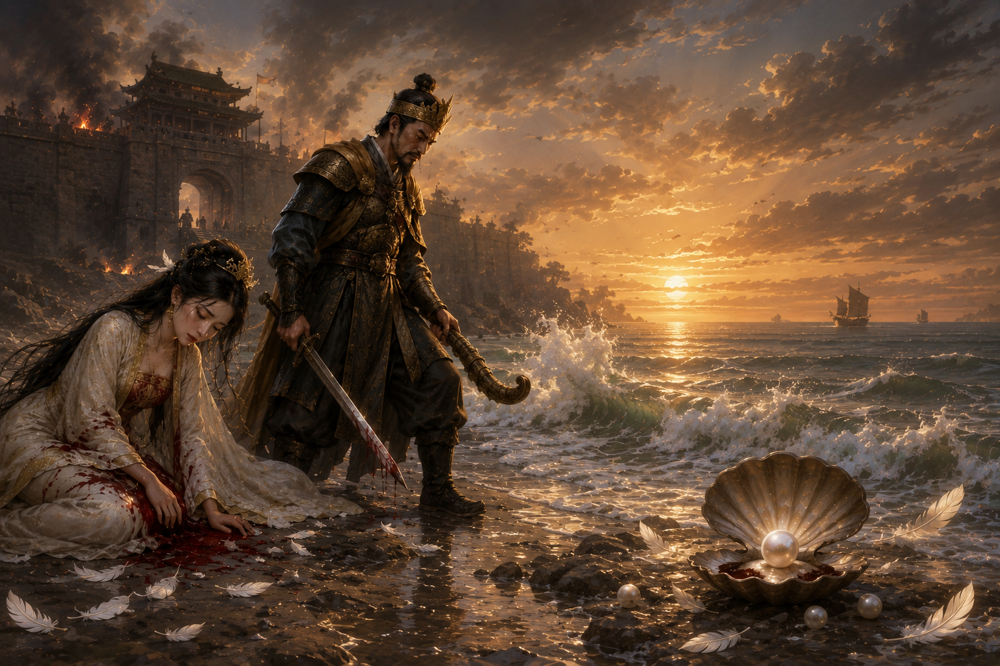
Đây chính là bi kịch lịch sử. An Dương Vương rút kiếm giết Mỵ Châu rồi cầm sừng tê giác của thần Kim Quy, xuống biển. Máu Mỵ Châu chảy xuống biển, trai sò ăn vào đều hóa ra ngọc trai.
📖 Ý nghĩa huyền thoạiCâu chuyện Mỵ Châu — Trọng Thủy là một trong những huyền thoại bi thương nhất của người Việt. Nó dạy bài học về cảnh giác trước kẻ thù dùng tình yêu làm vũ khí.
⚡ Xem ý nghĩa lịch sử...
📍 Lựa chọn B · Tình Phụ Tử
Bi kịch không thể tránh khỏi. Dù tha cho Mỵ Châu, quân Triệu Đà truy kịp — Âu Lạc vẫn mất. Đây là bài học về trách nhiệm và hậu quả của sự thiếu cảnh giác.
⚡ Nhìn nhận bài học...
📍 Lựa chọn C · Quyết Chiến
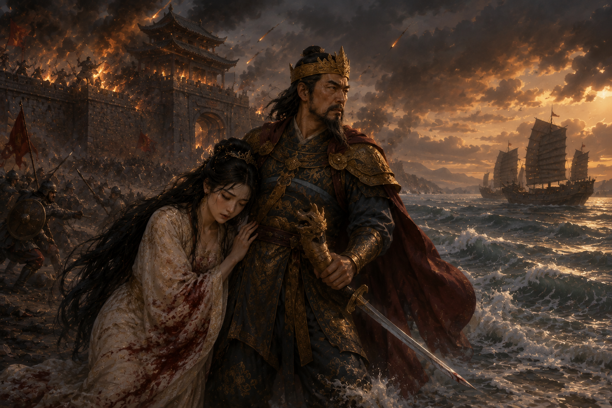
Dũng khí của bậc đế vương! Nhưng khi nỏ thần đã mất linh, thế cô lực kiệt. An Dương Vương chọn ra biển hơn là làm tù binh.
⚡ Bài học từ lịch sử...
🌊 Chương IX · Giếng Ngọc & Bài Học Ngàn Năm 🔵 dựng lại

💎 Truyền thuyết
Theo dấu lông ngỗng, Trọng Thủy tìm đến xác Mỵ Châu. Nhận ra tội lỗi của mình, chàng ôm xác vợ khóc thảm thiết rồi gieo mình xuống giếng tự tử.
Trọng Thủy — kẻ gián điệp hay nạn nhân của tham vọng cha? Người đời sau không ai trả lời được. Chỉ biết rằng máu Mỵ Châu chảy xuống biển, trai sò ăn vào đều hóa ngọc trai. Ai bắt được ngọc đem về rửa ở nước giếng Cổ Loa — nơi Trọng Thủy gieo mình — thì ngọc sáng rực lên như giọt nước mắt của tình yêu và hối hận.
Trọng Thủy — lời cuối
"Ta yêu nàng thật lòng, nhưng ta đã chọn sai. Không có gì chuộc lại được — không vương quốc nào, không chiến thắng nào xứng với cái giá này..."
🎓 Kiểm tra kiến thức
Theo truyền thuyết, ai muốn ngọc trai sáng trong phải làm gì?
💡 Ý nghĩa biểu tượng sâu xa
Ngọc trai được làm sáng bởi nước giếng Trọng Thủy là hình ảnh ẩn dụ đẹp nhất: tình yêu chân thật dù đi qua tội lỗi vẫn có thể gột rửa nên trong sáng. Người Việt không căm ghét Mỵ Châu — họ thương nàng. Không hoàn toàn tha Trọng Thủy — nhưng họ hiểu nỗi đau hối hận.
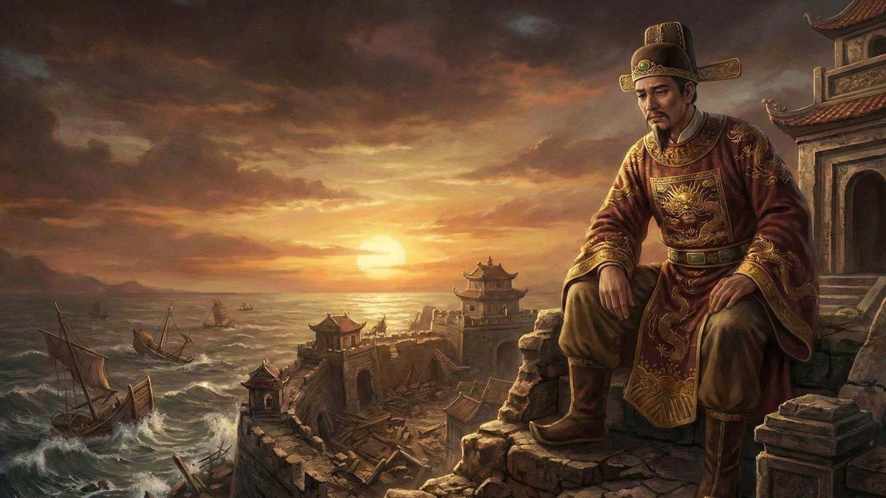
🌟 Di sảnNước Âu Lạc tồn tại 80 năm (257–179 TCN) rồi bị nhà Triệu thôn tính. Nhưng Thành Cổ Loa, huyền thoại nỏ thần và bi kịch Mỵ Châu vẫn sống mãi.
Câu chuyện An Dương Vương là bài học ngàn đời về cảnh giác, về bí mật quốc phòng, về cái giá của sự tự mãn khi đang nắm trong tay sức mạnh.
"Máu Mỵ Châu chảy xuống biển, trai sò ăn hóa ngọc. Người đời sau muốn ngọc trai sáng trong, lấy nước giếng Cổ Loa mà rửa — giếng nơi Trọng Thủy gieo mình vì ân hận, nơi bóng Mỵ Châu vẫn hiện về..."
— Truyền thuyết ngàn năm của người Việt
— Truyền thuyết ngàn năm của người Việt
💭 Suy ngẫm (không chấm điểm)
Nếu áp dụng bài học "cảnh giác trước hòa bình giả" vào cuộc sống hiện đại — trong công việc, học tập, hay các mối quan hệ — bạn nghĩ nó còn đúng không?
Không có đáp án đúng/sai.
⚡ Ý nghĩa lớn nhất của câu chuyện này?
📚 Nguồn Tham Khảo
Giếng Ngọc và sự tích ngọc trai — nước giếng thuộc phần truyền thuyết dân gian, mang tính biểu tượng, không phải sự kiện lịch sử có ghi chép xác thực.
Tài liệu tham khảo tinh thần
Truyền thuyết dân gian — lưu truyền qua Lĩnh Nam Chích Quái và truyện kể dân gian
Ghi chú về phương pháp thể hiện
🔵 Chi tiết Trọng Thủy tự vẫn ở giếng, ngọc trai sáng lên khi rửa nước giếng: hoàn toàn thuộc phần huyền thoại
Số năm tồn tại của Âu Lạc (80 năm, 257–179 TCN): dựa trên chính sử
Kết Thúc · Bài Học Ngàn Đời 📖 nguồn
"Thành Cổ Loa ngàn năm còn đó — nhắc nhở hậu thế về công lao dựng nước của An Dương Vương và bài học đắt giá về cảnh giác với kẻ thù..."
— Đền thờ An Dương Vương, Cổ Loa, Đông Anh, Hà Nội
— Đền thờ An Dương Vương, Cổ Loa, Đông Anh, Hà Nội
Bài học muôn đời! An Dương Vương xây Thành Cổ Loa — kỳ công kiến trúc vĩ đại nhất thời cổ đại Việt Nam. Nỏ thần Kim Quy là biểu tượng của sức mạnh quân sự. Nhưng sức mạnh đó bị phá hủy không phải bởi vũ lực mà bởi âm mưu và tình cảm.
📖 Di sản vật thể ngày nay
Khu di tích Cổ Loa (huyện Đông Anh, Hà Nội) vẫn còn các vòng tường thành đất và hào nước từ thời An Dương Vương. Đây là di tích kinh thành cổ nhất Việt Nam.
🗺 Đông Anh, Hà Nội⛩ Đền thờ An Dương Vương🏛 Di tích Quốc gia đặc biệt
📍 Lựa chọn B
Bi kịch Mỵ Châu rất cảm động, nhưng câu chuyện mang tầm vóc chính trị lớn hơn: bài học về bảo mật vũ khí, về cảnh giác khi kẻ thù dùng "hòa bình" làm mồi nhử.
⚡ Hiểu sâu hơn...
📍 Lựa chọn C
Triệu Đà chủ động cầu hòa vì không đánh thắng được — đó là dấu hiệu nguy hiểm! Khi kẻ thù đang thua mà bỗng xin kết thông gia, đó là lúc cần cảnh giác nhất.
⚡ Nhận ra mưu kế...
🐢
Hành Trình Hoàn Thành!
0
—
...
📔 NHẬT KÝ HÀNH TRÌNH CỦA BẠN
📚 Bài học lịch sử từ An Dương Vương
Câu chuyện dựng nước và mất nước Âu Lạc dạy chúng ta ba bài học không bao giờ cũ:
1. Đoàn kết tạo nên sức mạnh: Từ liên minh Âu Việt – Lạc Việt đến việc khoan hòa với dòng dõi Hùng Vương, đoàn kết luôn là nền tảng của một quốc gia vững mạnh.
2. Sức mạnh có thể bị phá bằng mưu kế: Nỏ thần mạnh bao nhiêu cũng vô dụng khi bí mật bị lộ. Bảo vệ bí mật quốc gia là trách nhiệm của cả dân tộc.
3. Không bao giờ tự mãn: "Trong cái yên tĩnh, hãy chuẩn bị cho ngày loạn."
1. Đoàn kết tạo nên sức mạnh: Từ liên minh Âu Việt – Lạc Việt đến việc khoan hòa với dòng dõi Hùng Vương, đoàn kết luôn là nền tảng của một quốc gia vững mạnh.
2. Sức mạnh có thể bị phá bằng mưu kế: Nỏ thần mạnh bao nhiêu cũng vô dụng khi bí mật bị lộ. Bảo vệ bí mật quốc gia là trách nhiệm của cả dân tộc.
3. Không bao giờ tự mãn: "Trong cái yên tĩnh, hãy chuẩn bị cho ngày loạn."
📚 Nguồn Tham Khảo
Các sự kiện, mốc thời gian trong trang này dựa trên chính sử và truyền thuyết dân gian đã được ghi chép. Các đoạn hội thoại và cảm xúc nhân vật (đánh dấu viền xanh 🔵) là dựng lại minh họa theo tinh thần truyền thuyết, không phải nguyên văn ghi chép cổ sử.
Tài liệu tham khảo
Đại Việt Sử Ký Toàn Thư — Ngô Sĩ Liên (Kỷ Thục)
Lĩnh Nam Chích Quái — Trần Thế Pháp (truyện "Rùa Vàng": An Dương Vương, Mỵ Châu — Trọng Thủy)
Việt Điện U Linh — Lý Tế Xuyên
Khu di tích Cổ Loa — Ban Quản lý Khu di tích Cổ Loa, Đông Anh, Hà Nội
Lịch sử Việt Nam, Viện Sử học — NXB Khoa học Xã hội
Ghi chú về phương pháp thể hiện
Mốc thời gian, địa danh, di tích: dựa trên tư liệu chính sử và khảo cổ đã kiểm chứng
Hội thoại giữa các nhân vật, nội tâm Trọng Thủy, diễn biến tình cảm Mỵ Châu (Chương VI–VII): dựng lại nhằm mục đích minh họa, không phải trích dẫn nguyên văn
Câu chuyện An Dương Vương thuộc thể loại truyền thuyết — pha trộn giữa sự kiện lịch sử có thật (liên minh Âu Việt–Lạc Việt, dựng nước Âu Lạc, mất nước 179 TCN) và yếu tố huyền thoại (thần Kim Quy, nỏ thần, ngọc trai — giếng nước)